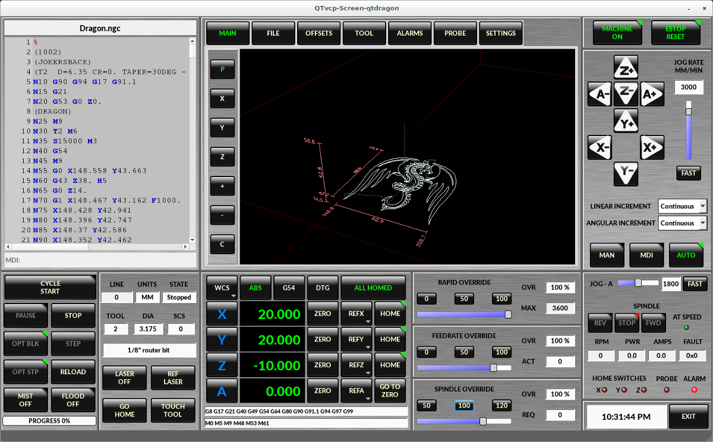
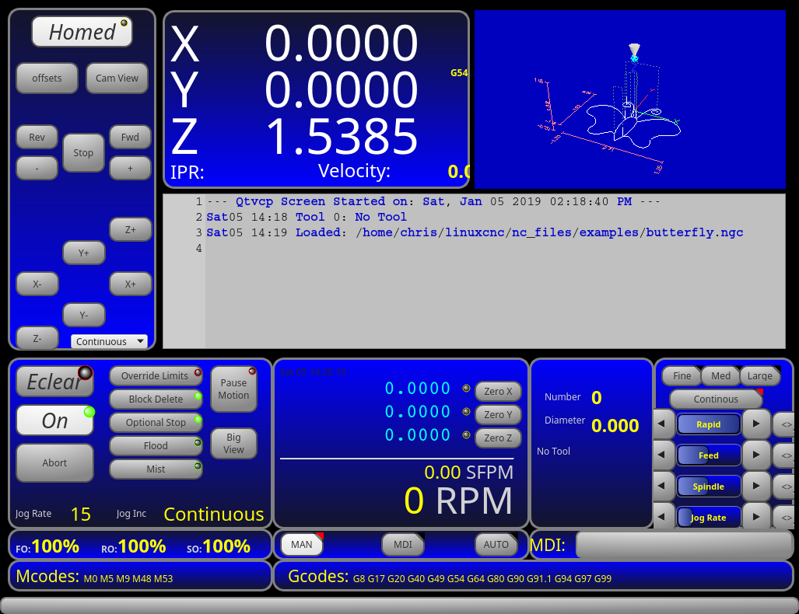
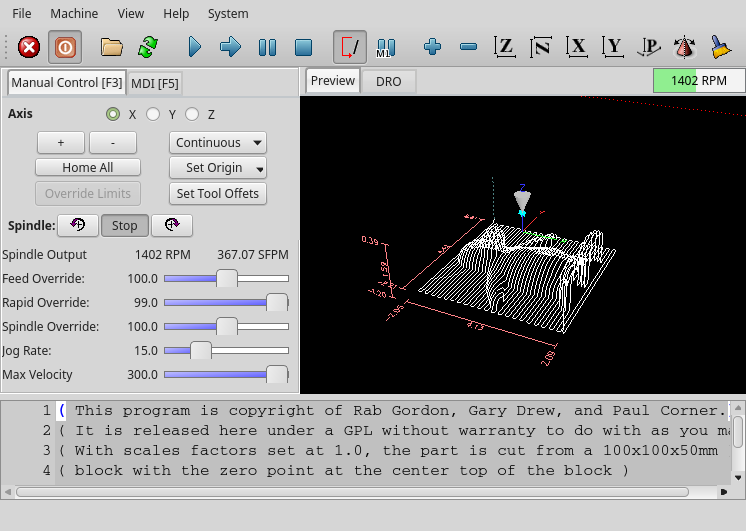
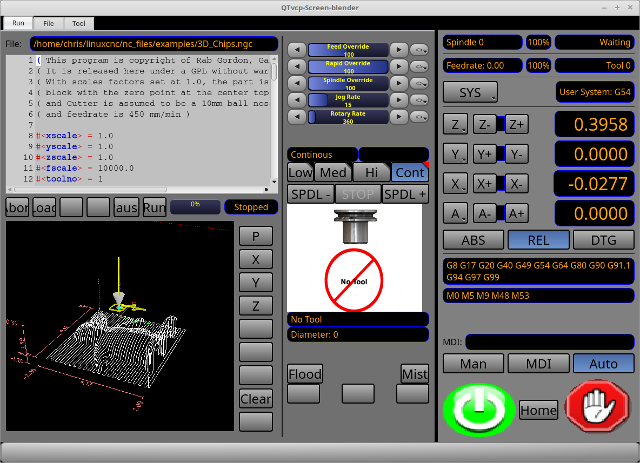
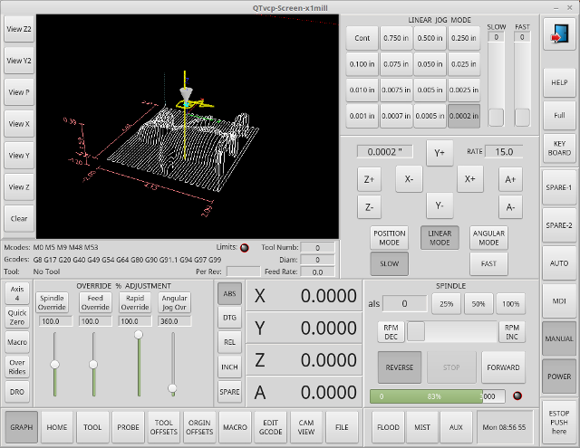
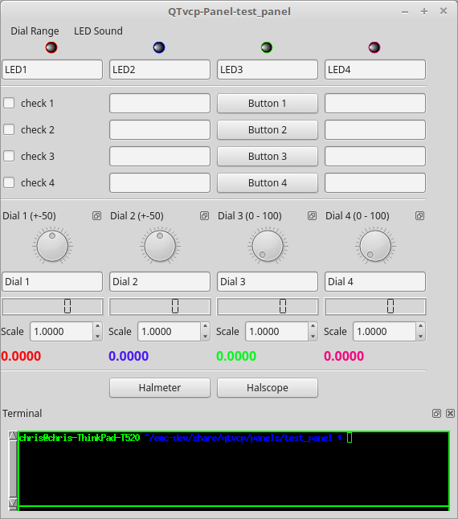
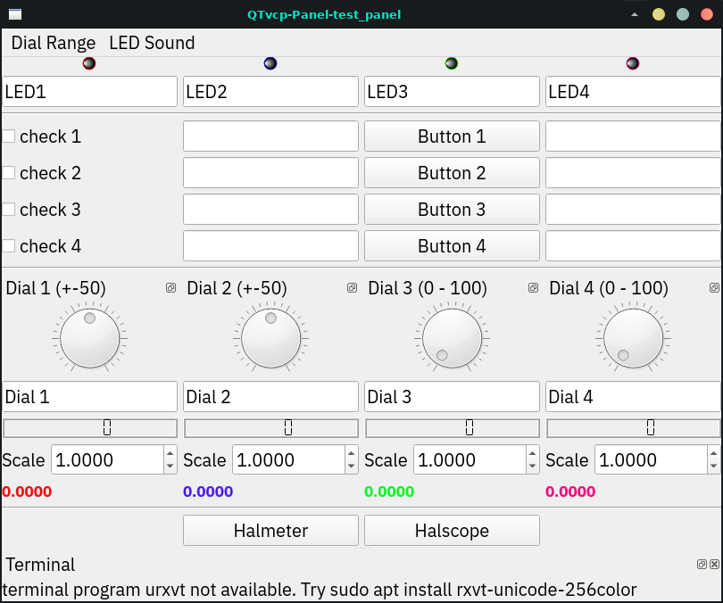
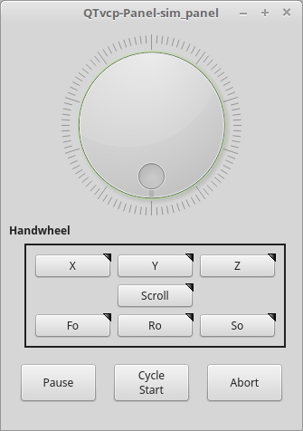
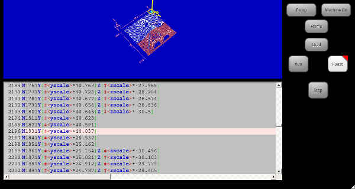
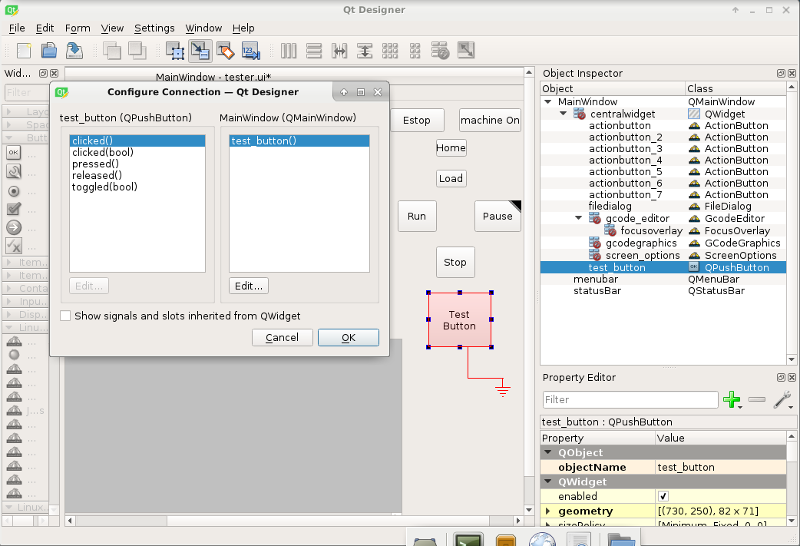

QtVCP is an infrastructure to build custom CNC screens or control
panels for LinuxCNC.
It displays a .ui file built with Qt Designer screen editor and
combines this with Python programming to create a GUI screen for
running a CNC machine.
QtVCP is completely customizable: you can add different buttons and
status LEDs etc. or add Python code for even finer grain customization.
1. Showcase
Few examples of QtVCP built screens and virtual control panels:

Figure 1. QtDragon - 3/4-Axis Sample

Figure 2. QtDefault - 3-Axis Sample

Figure 3. QtAxis - Self Adjusting Axis Sample

Figure 4. Blender - 4-Axis Sample

Figure 5. X1mill - 4-Axis Sample
Figure 6. cam_align - Camera Alignment VCP

Figure 7. test_panel - Test Panel VCP
2. Overview
Two files are used, individually or in combination, to
add customizations:
A UI file that is a XML file made with Qt Designer graphical editor.
A handler file which is a Python code text file.
Normally QtVCP uses the stock UI and handler file, but you can specify
QtVCP to use local UI and handler files.
A local file is one that is in the configuration folder that defines
the rest of the machine’s requirements.
One is not restricted to adding a custom panel on the right or a custom
tab as QtVCP leverages Qt Designer (the editor) and PyQT5 (the
widget toolkit).
QtVCP has some added special LinuxCNC widgets and actions.
There are special widgets to bridge third party widgets to HAL pins.
It’s possible to create widget responses by connecting signals to
Python code in the handler file.
2.1. QtVCP Widgets
QtVCP uses the PyQt5 toolkit’s widgets for LinuxCNC integration.
Widget is the general name for user interface objects such as buttons
and labels in PyQT5.
You are free to use any available default widgets in the Qt Designer
editor.
There are also special widgets made for LinuxCNC that make integration
easier.
These are split in three heading on the left side of the editor:
One is for HAL only widgets;
One is for CNC control widgets;
One is for Dialog widgets.
You are free to mix them in any way on your panel.
A very important widget for CNC control is the ScreenOptions widget:
it does not add anything visually to the screen but, allows important
details to be selected rather then be coded in the handler file.
2.2. INI Settings
If you are using QtVCP to make a CNC motion control screen (rather then a HAL based panel), in the INI file,
in the [DISPLAY] section, add a line with the following pattern:
DISPLAY = qtvcp <options> <screen_name>
Note
All <options> must appear before <screen_name>.
Options
-d Debugging on.
-i Enable info output.
-v Enable verbose debug output.
-q Enable only error debug output.
-a Set window always on top.
-c NAME HAL component name. Default is to use the UI file name.
-g GEOMETRY Set geometry WIDTHxHEIGHT+XOFFSET+YOFFSET. Values are in pixel units,
XOFFSET/YOFFSET is referenced from top left of screen.
Use -g WIDTHxHEIGHT for just setting size or -g +XOFFSET+YOFFSET for just position.
Example: -g 200x400+0+100
-H FILE Execute hal statements from FILE with halcmd after the component is set up and ready.
-m Maximize window.
-f Fullscreen the window.
-t THEME Default is system theme
-x XID Embed into a X11 window that doesn’t support embedding.
--push_xid Send QtVCP’s X11 window id number to standard output; for embedding.
-u USERMOD File path of a substitute handler file.
-o USEROPTS Pass a string to QtVCP’s handler file under self.w.USEROPTIONS_ list variable. Can be multiple -o.
<screen_name>
<screen_name> is the base name of the .ui and _handler.py files.
If <screen_name> is missing, the default screen will be loaded.
QtVCP assumes the UI file and the handler file use the same base name.
QtVCP will first search the LinuxCNC configuration directory that was launched for the files, then in the system skin folder holding standard screens.
Adjusts the response rate of the GUI updates in milliseconds.
Defaults to 100, useable range 50 - 200.
The widgets, graphics and HAL pin update can be set separately.
If the update time is not set right the screen can become unresponsive or very jerky.
2.3. Qt Designer UI File
A Qt Designer file is a text file organized in the XML standard that describes the layout and widgets of the screen.
PyQt5 uses this file to build the display and react to those widgets.
The Qt Designer editor makes it relatively easy to build and edit this file.
2.4. Handler Files
A handler file is a file containing Python code, which adds to QtVCP default routines.
A handler file allows one to modify defaults, or add logic to a QtVCP screen without having to modify QtVCP’s core code.
In this way you can have custom behaviors.
If present a handler file will be loaded.
Only one file is allowed.
2.5. Libraries Modules
QtVCP, as built, does little more than display the screen and react to widgets.
For more prebuilt behaviors there are available libraries (found in lib/python/qtvcp/lib in RIP LinuxCNC install).
Libraries are prebuilt Python modules that add features to QtVCP.
In this way you can select what features you want - yet don’t have to build common ones yourself.
Such libraries include:
audio_player
aux_program_loader
keybindings
message
preferences
notify
virtual_keyboard
machine_log
2.6. Themes
Themes are a way to modify the look and feel of the widgets on the screen.
For instance the color or size of buttons and sliders can be changed using themes.
The Windows theme is default for screens.
The System theme is default for panels.
To see available themes, they can be loaded by running the following command in a terminal:
qtvcp -d -t <theme_name>
QtVCP can also be customized with Qt stylesheets (QSS) using CSS.
2.7. Local Files
If present, local UI/QSS/Python files in the configuration folder will be loaded instead of the stock UI files.
Local UI/QSS/Python files allow you to use your customized designs rather than the default screens.
QtVCP will look for a folder named <screen_name> (in the launched configuration folder that holds the INI file).
In that folder, QtVCP will load any of the available following files:
<screen_name>.ui,
<screen_name>_handler.py, and
<screen_name>.qss.
2.8. Modifying Stock Screens
There are three ways to customize a screen/panel.
2.8.1. Minor StyleSheet Changes
Stylesheets can be used to set Qt properties.
If a widget uses properties then they usually can be modified by stylesheets.
Example of a widget with accompanying style sheet settings.
Another Python file can be used to add commands to the screen, after the handler file is parsed.
This can be useful for minor changes while still honouring standard handler updates from linuxcnc repositoies.
In the INI file under the [DISPLAY] heading add USER_COMMAND_FILE = _PATH_
PATH can be any valid path.
It can use ~ for home directory or WORKINGDIRECTORY or CONFIGDIRECTORY to represent QtVCP’s idea of those directories:
If no entry is found in the INI, QtVCP will look in the default path.
The default path is in the configuration directory as a hidden file using the screen basename and rc, e.g., CONFIGDIRECTORY/.<screen_name>rc.
This file will be read and executed as Python code in the handler file context.
Only local functions and local attributes can be referenced.
Global libraries defined in the screen’s handler file can be referenced but must be preceded with self.
These are usually seen as all capital words with no preceding self. self references the window class self.w typically references the widgets
What can be used can vary by screen and development cycle.
A simple example
Reference the main window to change the title (Won’t show if using INI entries for title change)
self.w.setWindowTitle('My Title Test')
An advanced instance patching example
This could work with the Qtdragon screen’s handler file.
Here we show how to add new functions and override existing ones.
# needed to instance patch# reference: https://ruivieira.dev/python-monkey-patching-for-readability.htmlimport types
# This is actually an unbounded function with 'obj' as a parameter.# You call this function without the usual preceding 'self.'# This is because will will not be patching it into the original handler class instance# It will only be called from code in this filedeftest_function(obj):print(dir(obj))# This is a new function we will added to the existing handler class instance.# Notice it calls the unbounded function with 'self' as an parameter# 'self' is the only global reference available. It references the window instancedefon_keycall_F10(self,event,state,shift,cntrl):if state:print('F10')test_function(self)# This will be used to override an existing function in the existing handler class instance# note we also call a copy of the original function too# this shows how to extend an existing function to do extra functionsdefon_keycall_F11(self,event,state,shift,cntrl):if state:
self.on_keycall_F11_super(event,state,shift,cntrl)print('Hello')# We are referencing the KEYBIND library that was instantiated in the# original handler class instance by adding 'self.' to it.# This function tells KEYBIND to call 'on_keycall_F10' when F10 is pressed
self.KEYBIND.add_call('Key_F10','on_keycall_F10')# Here we are instance patching the original handler file to add a new# function that calls our new function (of the same name)# defined in this file
self.on_keycall_F10 = types.MethodType(on_keycall_F10, self)# Here we are defining a copy of the original 'on_keycall_F11' function# so we can call it later. we can use any valid, unused function name.# We need to do this before overriding the original function.
self.on_keycall_F11_super = self.on_keycall_F11
# Here we are instance patching the original handler file to override# an existing function to point to our new function (of the same name)# defined in this file
self.on_keycall_F11 = types.MethodType(on_keycall_F11, self)
2.8.3. Full Creative Control with custom handler/ui files
If you wish to modify a stock screen with full control, copy it’s UI
and handler file to your configuration folder.
There is a QtVCP panel to help with this:
Open a terminal and run the following command:
qtvcp copy_dialog
Select the screen and destination folder in the dialog
If you wish to name your screen differently than the builtin screen’s default name, change the basename in the edit box.
There should be a folder in the config folder; for screens: named <CONFIG FOLDER>/qtvcp/screens/ for panels: named <CONFIG FOLDER>/qtvcp/panels/ add the folders if ther are missing and copy your folder/files in it.
Validate to copy all the files
Delete the files you don’t wish to modify so that the original files will be used.
3. VCP Panels
QtVCP can be used to create control panels that interface with HAL.
3.1. Builtin Panels
There are several builtin HAL panels available.
In a terminal type qtvcp <return> to see a list:
test_panel
Collection of useful widgets for testing HAL components, including speech of LED state.

Figure 8. QtVCP HAL Test Builtin Panel
cam_align
A camera display widget for rotational alignment.
Figure 9. cam_align - Camera Alignment VCP
sim_panel
A small control panel to simulate MPG jogging controls etc.
For simulated configurations.

Figure 10. QtVCP Sim Builtin Panel
vismach_mill_xyz
3D OpenGL view of a 3-axis milling machine.
Figure 11. QtVismach - 3-Axis Mill Builtin Panel
You can load these from the terminal or from a HAL file with this basic command:
loadusrqtvcptest_panel
But more typically like this:
loadusr -Wntest_panelqtvcptest_panel
In this way HAL will wait till the HAL pins are made before continuing on.
3.2. Custom Panels
You can of course make your own panel and load it.
If you made a UI file named my_panel.ui and a HAL file named my_panel.hal, you would then load this from a terminal with:
In this case we load qtvcp using -Wn which waits for the panel to finish loading before continuing to run the next HAL command.
This is to ensure that the panel created HAL pins are actually done in case they are used in the rest of the file.
4. Build A Simple Clean-sheet Custom Screen

Figure 12. QtVCP Ugly custom screen
4.1. Overview
To build a panel or screen:
Use Qt Designer to build a design you like and save it to your configuration folder with a name of your choice, ending with .ui
Modify the configuration INI file to load QtVCP using your new .ui file.
Then connect any required HAL pins in a HAL file.
4.2. Get Qt Designer To Include LinuxCNC Widgets
Install Qt Designer
First you must have the Qt Designer installed.
The following commands should add it to your system, or use your package manager to do the same:
'usr/lib/python2.7/qtvcp/plugins/qtvcp_plugin.py' or
'usr/lib/python2.7/dist-packages/qtvcp/plugins/qtvcp_plugin.py'
Make a symbolic link to the above file and move it to one of the places Qt Designer searches in.
Qt Designer searches in these two place for links (pick one):
'/usr/lib/x86_64-linux-gnu/qt5/plugins/designer/python' or
'~/.designer/plugins/python'
You may need to create the plugins/python folder.
Start Qt Designer:
For a RIP install:
Open a terminal, set the environment for LinuxCNC <1>, then load Qt Designer <2> with :
. scripts/rip-environment <1>
designer -qt=5 <2>
For a package install:
Open a terminal and type:
designer -qt=5
If all goes right, Qt Designer will launch and you will see the selectable LinuxCNC widgets on the left hand side.
4.3. Build The Screen .ui File
Create MainWindow Widget
When Qt Designer is first started there is a 'New Form' dialog displayed.
Pick 'Main Window' and press the 'Create' button.
A MainWindow widget is displayed.
We are going to make this window a specific non resizeable size:
Set MainWindow Minimum and Maximum Size
Grab the corner of the window and resize to an appropriate size, say 1000x600.
Right click on the window and click set minimum size.
Do it again and set maximum size.
Our sample widget will now not be resizable.
Add the ScreenOptions Widget
Drag and drop the ScreenOptions widget anywhere onto the main window.
This widget doesn’t add anything visually but sets up some common options.
It’s recommended to always add this widget before any other.
Right click on the main window, not the ScreenOptions widget, and set the layout as vertical to make the ScreenOptions fullsized.
Add Panel Content
On the right hand side there is a panel with tabs for a Property editor and an Object inspector.
On the Object inspector click on the ScreenOptions.
Then switch to the Property Editor and, under the ScreenOptions heading, toggle filedialog_option.
Drag and drop a GCodeGraphicswidget and a GcodeEditorwidget.
Place and resize them as you see fit leaving some room for buttons.
Add Action Buttons
Add 7 action buttons on to the main window.
If you double click the button, you can add text.
Edit the button labels for Estop, Machine On, Home, Load, Run, Pause and stop.
Action buttons default to no action so we must change the properties for defined functions. You can edit the properties:
directly in the property editor on the right side of Qt Designer, or
conveniently, left double clicking on the button to launch a properties dialog that allows selecting actions while only displaying relevant data to the action.
We will describe the convenient way first:
Right click the Machine On button and select Set Actions.
When the dialog displays, use the combobox to navigate to MACHINE CONTROLS - Machine On.
In this case there is no option for this action so select OK.
Now the button will turn the machine on when pressed.
And now the direct way with Qt Designer’s property editor:
Select the Machine On button.
Go to the Property Editor on the right side of Qt Designer.
Scroll down until you find the ActionButton heading.
Click the machine_on action checkbox you will see in the list of properties and values.
The button will now control machine on/off.
Do the same for all the other button with the addition of:
With the Home button we must also change the joint_number property to -1.
This tells the controller to home all the axes rather then a specific axis.
With the Pause button:
Under the Indicated_PushButton heading check the indicator_option.
We then need to save this design as tester.ui in the sim/qtvcp folder.
We are saving it as tester as that is a file name that QtVCP recognizes and will use a built in handler file to display it.
4.4. Handler file
A handler file is required.
It allows customizations to be written in Python.
For instance, keyboard controls are usually written in the handler file.
In this example, the built in file tester_handler.py is automatically used:
It does the minimum required to display the tester.ui defined screen and do basic keyboard jogging.
4.5. INI Configuration
[DISPLAY] Section
If you are using QtVCP to make a CNC control screen, under the INI file[DISPLAY] heading, set:
DISPLAY = qtvcp <screen_name>
<screen_name> is the base name of the .ui and _handler.py files.
In our example there is already a sim configuration called tester, that we will use to display our test screen.
[HAL] Section
If your screen used widgets with HAL pins, then you must connect them in a HAL file.
QtVCP looks in the INI file, under the [HAL] heading for the entries below:
POSTGUI_HALFILE=<filename>
Typically <filename> would be +<screen_name>_postgui.hal+, but can be any legal filename.
You can have multiple POSTGUI_HALFILE lines in the INI: each will be run one after the other in the order they appear.
These commands are executed after the screen is built, guaranteeing the widget HAL pins are available.
POSTGUI_HALCMD=<command>
<command> would be any valid HAL command.
You can have multiple POSTGUI_HALCMD lines in the INI: each will be run one after the other in the order they appear.
To guaranty the widget HAL pins are available, these commands are executed:
after the screen is built,
after all the POSTGUI_HALFILEs are run.
In our example there are no HAL pins to connect.
5. Handler File In Detail
Handler files are used to create custom controls using Python.
5.1. Overview
Here is a sample handler file.
It’s broken up in sections for ease of discussion.
############################# **** IMPORT SECTION **** #############################import sys
import os
import linuxcnc
from PyQt5 import QtCore, QtWidgets
from qtvcp.widgets.mdi_line import MDILine as MDI_WIDGET
from qtvcp.widgets.gcode_editor import GcodeEditor as GCODE
from qtvcp.lib.keybindings import Keylookup
from qtvcp.core import Status, Action
# Set up loggingfrom qtvcp import logger
LOG = logger.getLogger(__name__)# Set the log level for this module#LOG.setLevel(logger.INFO) # One of DEBUG, INFO, WARNING, ERROR, CRITICAL############################################ **** INSTANTIATE LIBRARIES SECTION **** ############################################
KEYBIND =Keylookup()
STATUS =Status()
ACTION =Action()#################################### **** HANDLER CLASS SECTION **** ####################################class HandlerClass:######################### **** INITIALIZE **** ########################## widgets allows access to widgets from the QtVCP files# at this point the widgets and hal pins are not instantiateddef__init__(self, halcomp,widgets,paths):
self.hal = halcomp
self.w = widgets
self.PATHS = paths
########################################### SPECIAL FUNCTIONS SECTION ############################################ at this point:# the widgets are instantiated.# the HAL pins are built but HAL is not set ready# This is where you make HAL pins or initialize state of widgets etcdefinitialized__(self):passdefprocessed_key_event__(self,receiver,event,is_pressed,key,code,shift,cntrl):# when typing in MDI, we don't want keybinding to call functions# so we catch and process the events directly.# We do want ESC, F1 and F2 to call keybinding functions thoughif code notin(QtCore.Qt.Key_Escape,QtCore.Qt.Key_F1 ,QtCore.Qt.Key_F2,
QtCore.Qt.Key_F3,QtCore.Qt.Key_F5,QtCore.Qt.Key_F5):# search for the top widget of whatever widget received the event# then check if it's one we want the keypress events to go to
flag = False
receiver2 = receiver
while receiver2 isnot None andnot flag:ifisinstance(receiver2, QtWidgets.QDialog):
flag = True
breakifisinstance(receiver2, MDI_WIDGET):
flag = True
breakifisinstance(receiver2, GCODE):
flag = True
break
receiver2 = receiver2.parent()if flag:ifisinstance(receiver2, GCODE):# if in manual do our keybindings - otherwise# send events to G-code widgetif STATUS.is_man_mode()== False:if is_pressed:
receiver.keyPressEvent(event)
event.accept()return True
elif is_pressed:
receiver.keyPressEvent(event)
event.accept()return True
else:
event.accept()return True
if event.isAutoRepeat():return True
# ok if we got here then try keybindingstry:return KEYBIND.call(self,event,is_pressed,shift,cntrl)except NameError as e:
LOG.debug('Exception in KEYBINDING: {}'.format(e))except Exception as e:
LOG.debug('Exception in KEYBINDING:', exc_info=e)print('Error in, or no function for: %s in handler file for-%s'%(KEYBIND.convert(event),key))return False
######################### CALLBACKS FROM STATUS ################################################# CALLBACKS FROM FORM ############################################## GENERAL FUNCTIONS ####################### keyboard jogging from key binding calls# double the rate if fast is truedefkb_jog(self, state, joint, direction, fast = False, linear = True):ifnot STATUS.is_man_mode()ornot STATUS.machine_is_on():returnif linear:
distance = STATUS.get_jog_increment()
rate = STATUS.get_jograte()/60else:
distance = STATUS.get_jog_increment_angular()
rate = STATUS.get_jograte_angular()/60if state:if fast:
rate = rate *2
ACTION.JOG(joint, direction, rate, distance)else:
ACTION.JOG(joint,0,0,0)###################### KEY BINDING CALLS ####################### Machine controldefon_keycall_ESTOP(self,event,state,shift,cntrl):if state:
ACTION.SET_ESTOP_STATE(STATUS.estop_is_clear())defon_keycall_POWER(self,event,state,shift,cntrl):if state:
ACTION.SET_MACHINE_STATE(not STATUS.machine_is_on())defon_keycall_HOME(self,event,state,shift,cntrl):if state:if STATUS.is_all_homed():
ACTION.SET_MACHINE_UNHOMED(-1)else:
ACTION.SET_MACHINE_HOMING(-1)defon_keycall_ABORT(self,event,state,shift,cntrl):if state:if STATUS.stat.interp_state == linuxcnc.INTERP_IDLE:
self.w.close()else:
self.cmnd.abort()# Linear Joggingdefon_keycall_XPOS(self,event,state,shift,cntrl):
self.kb_jog(state,0,1, shift)defon_keycall_XNEG(self,event,state,shift,cntrl):
self.kb_jog(state,0,-1, shift)defon_keycall_YPOS(self,event,state,shift,cntrl):
self.kb_jog(state,1,1, shift)defon_keycall_YNEG(self,event,state,shift,cntrl):
self.kb_jog(state,1,-1, shift)defon_keycall_ZPOS(self,event,state,shift,cntrl):
self.kb_jog(state,2,1, shift)defon_keycall_ZNEG(self,event,state,shift,cntrl):
self.kb_jog(state,2,-1, shift)defon_keycall_APOS(self,event,state,shift,cntrl):pass#self.kb_jog(state, 3, 1, shift, False)defon_keycall_ANEG(self,event,state,shift,cntrl):pass#self.kb_jog(state, 3, -1, shift, linear=False)############################ **** closing event **** ########################################################### required class boiler code ###############################def__getitem__(self, item):returngetattr(self, item)def__setitem__(self, item, value):returnsetattr(self, item, value)################################# required handler boiler code #################################defget_handlers(halcomp,widgets,paths):return[HandlerClass(halcomp,widgets,paths)]
5.2. IMPORT Section
This section is for importing required library modules for your screen.
It would be typical to import QtVCP’s keybinding, Status and Action libraries.
5.3. INSTANTIATE LIBRARIES Section
By instantiating the libraries here we create global reference.
You can note this by the commands that don’t have self. in front of them.
By convention we capitalize the names of globally referenced libraries.
5.4. HANDLER CLASS Section
The custom code is placed in a class so QtVCP can utilize it.
This is the definitions of the handler class.
5.5. INITIALIZE Section
Like all Python libraries the +__init__+ function is called when the library is first instantiated.
This is where you would set up defaults, as well as reference variables and global variables.
The widget references are not available at this point.
The variables halcomp, widgets and paths give access to QtVCP’s HAL component, widgets, and path info respectively.
5.6. SPECIAL FUNCTIONS Section
There are several special functions that QtVCP looks for in the handler file.
If QtVCP finds these it will call them, if not it will silently ignore them.
initialized__(self):
This function is called after the widgets and HAL pins are built.
You can manipulate the widgets and HAL pins or add more HAL pins here.
Typically there can be
preferences checked and set,
styles applied to widgets,
status of LinuxCNC connected to functions.
keybindings would be added.
class_patch__(self):
Class patching, also known as monkey patching, allows to override function calls in an imported module.
Class patching must be done before the module is instantiated, and it modifies all instances made after that.
An example might be patching button calls from the G-code editor to call functions in the handler file instead.
This function is called to facilitate keyboard jogging etc.
By using the keybinding library this can be used to easily add functions bound to keypresses.
keypress_event__(self,receiver, event):
This function gives raw key press events.
It takes precedence over the processed_key_event.
keyrelease_event__(receiver, event):
This function gives raw key release events.
It takes precedence over the processed_key_event.
before_loop__(self):
This function is called just before the Qt event loop is entered.
At that point, all widgets/libraries/initialization code has completed and the screen is already displayed.
system_shutdown_request__(self):
If present, this function overrides the normal function called for total system shutdown.
It could be used to do pre-shutdown housekeeping.
The Linux system will not shutdown if using this function, you will have to do that yourself.
QtVCP/LinuxCNC will terminate without a prompt once this function returns.
closing_cleanup__(self):
This function is called just before the screen closes.
It can be used to do cleanup before closing.
5.7. STATUS CALLBACKS Section
By convention this is where you would put functions that are callbacks from STATUS definitions.
5.8. CALLBACKS FROM FORM Section
By convention this is where you would put functions that are callbacks from the widgets connected to the MainWindow in the Qt Designer editor.
5.9. GENERAL FUNCTIONS Section
By convention this is where you put your general functions.
5.10. KEY BINDING Section
If you are using the keybinding library this is where you place your custom key call routines.
It is usually better to use the special closing_cleanup__ function.
6. Connecting Widgets to Python Code
It is possible to connect widgets to Python code using signals and slots.
In this way you can:
Give new functions to LinuxCNC widgets, or
Utilize standard Qt widgets to control LinuxCNC.
6.1. Overview
In the Qt Designer editor:
You create user function slots
You connect the slots to widgets using signals.
In the handler file:
You create the slot’s functions defined in Qt Designer.
6.2. Using Qt Designer to add Slots
When you have loaded your screen into Qt Designer, add a plain PushButton to the screen.
You could change the name of the button to something interesting like test_button.
There are two ways to edit connections - This is the graphical way.
There is a button in the top tool bar of Qt Designer for editing signals.
After pushing it, if you click-and-hold on the button it will show an arrow (looks like a ground signal from electrical schematic).
Slide this arrow to a part of the main window that does not have widgets on it.
A Configure Connections dialog will pop up.
The list on the left are the available signals from the widget.
The list on the right are the available slots on the main window and you can add to it.
Pick the signal clicked() - this makes the slots side available.
Click Edit on the slots list.
A Slots/Signals of MainWindow dialog will pop up.
On the slots list at the top there is a + icon - click it.
You can now edit a new slot name.
Erase the default name slot() and change it to test_button()
Press the OK button.
You’ll be back to the Configure Connections dialog.
Now you can select your new slot in the slot list.
Then press OK and save the file.

Figure 14. Qt Designer Signal/Slot Selection
6.3. Python Handler Changes
Now you must add the function to the handler file.
The function signature is def slot_name(self):.
For our example, we will add some code to print the widget name:
deftest_button(self):
name = self.w.sender().text()print(name)
Add this code under the section named:
######################## callbacks from form ########################
In fact it doesn’t matter where in the handler class you put the commands but by convention this is where to put it.
Save the handler file.
Now when you load your screen and press the button it should print the name of the button in the terminal.